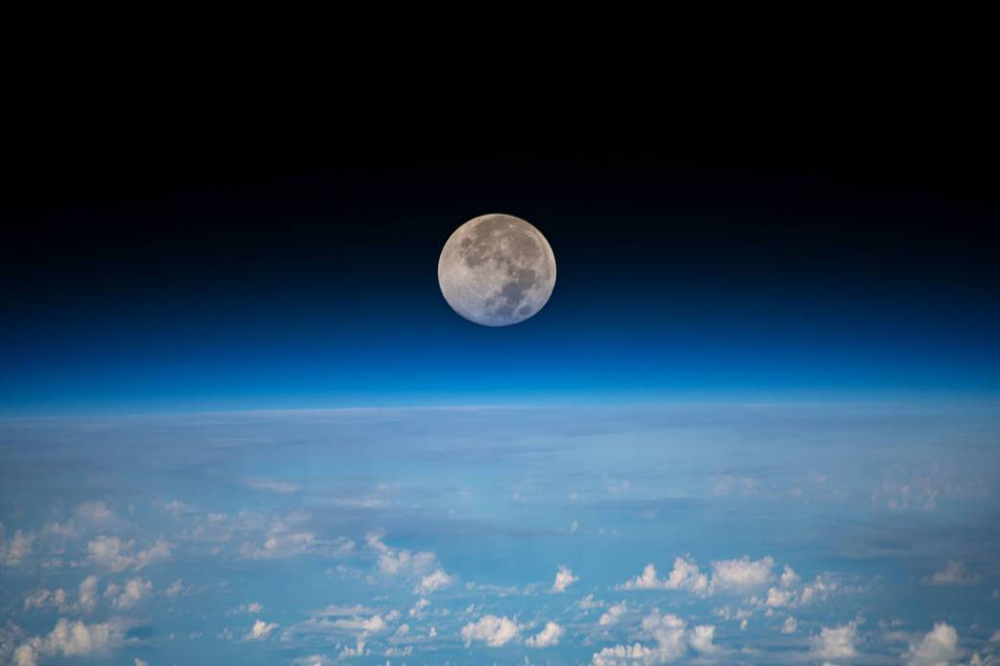

MOON EXPLORER
一顆月亮，
四種探索方式。
看它怎麼亮，走近它的表面，追問它的過去。
不必照順序，從你有興趣的問題開始。

01 / 月球探索
從地球看月亮
月亮沒有變形，改變的是我們看見的亮面。
先用位置和光線，分清月相與月面本身的明暗。
想換個角度？
02 / 月球探索
走進月面
月海沒有海水，真正的水冰另有藏身之處。
從表面往裡看，認識月海、撞擊坑、極區水冰和月球內部。
影像與模型
月海和撞擊坑，長什麼樣？
從觀測影像辨認地形，也可開啟月球模型。
打開探索 ↗圖片與解說月球的冰，藏在哪裡？
看看為什麼研究人員關注極區的陰影。
打開探索 ↗結構圖解不鑽穿月球，怎麼知道裡面？
從地震波等線索，認識月球的內部結構。
打開探索 ↗想換個角度？
03 / 月球探索
讀懂月球歷史
月岩與月壤，是追問過去的線索。
從月球如何形成，接到月壤能留下什麼記錄；區分觀測證據與研究解釋。
故事與動畫
月球是怎麼形成的？
認識巨撞假說與月岩證據，不把模型當成完整定論。
打開探索 ↗研究故事月壤怎麼留下地球的線索？
從樣本中的氣體，認識磁場與粒子輸送的研究。
打開探索 ↗比較圖解為什麼有些歷史要去月球找？
比較地球與月面的改造作用，也看保存記錄的限制。
打開探索 ↗想換個角度？
04 / 月球探索
在月球做研究
觀測位置不同，能研究的問題也不同。
從月球背面的電波環境，延伸到天線構想與月球上的計時。
互動實驗
月球背面，安靜在哪裡？
切換正面、背面與日夜，比較電波觀測條件。
打開探索 ↗研究構想天線能聽見多早的宇宙？
了解低頻觀測與 FarView 概念，不把構想當成已建成設施。
打開探索 ↗延伸閱讀到了月球，鐘也要重新對準？
認識月球時間問題，以及它與探測任務的關係。
打開探索 ↗歷史照片人類如何站上另一個世界？
從阿波羅照片分辨實拍、現象與常見疑問。
打開探索 ↗想換個角度？
想連著讀一個完整故事？
這裡保留原有文章；上方探索區可以直接跳到相關段落。